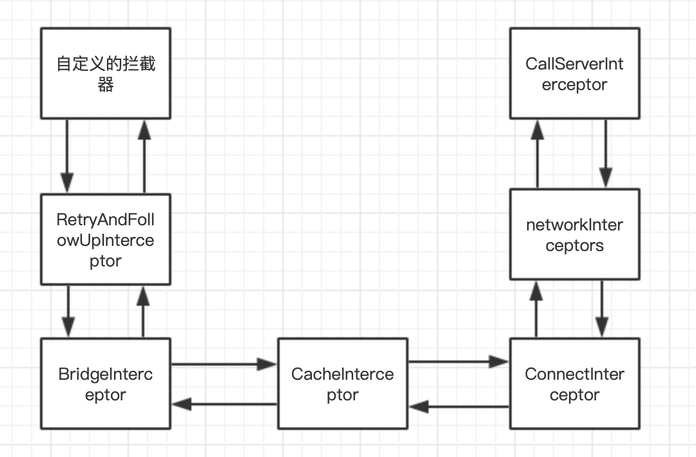

okhttp及retrofit封装
okhttp
1 | val okHttpClient = OkHttpClient() |
为了有宏观上的认识，举例上面的代码是最普通的okhttp的网络请求。分为三个步骤
- 构建OkHttpClient对象
- 构建Request对象
- 发起网络请求，回调Response结果
OkHttpClient
这个是整个OkHttp的核心管理类，所有的内部逻辑和对象归OkHttpClient统一来管理，它通过Builder构造器生成，构造参数和类成员很多。
OkHttpClient是通过Build构建者模式生成对象的，这种对象构建方式适合参数比较多，并且可随意配置的情况。在框架源码中用的非常多。
看下构建对象所传递的参数
1 |
|
我们一个一个来看
- Dispatcher：调度器，该类主要是请求call的调度管理，比如同时最多并发默认为64，单个host最大并发5，维护了三个ArrayDeque，一个保存了正在执行的同步任务；一个保存异步正在执行的请求，另一个是异步等待执行的请求。
- ConnectionPool：链接池，默认池大小，5个空闲，5个活跃。内部功能由代理类
RealConnectionPool实现，维护这链接池的添加和移除等。 - interceptors：用户使用的时候，自定义的拦截器数组
- networkInterceptors：websocket链接时使用的拦截器数组
- eventListenerFactory：事件监听工厂
- retryOnConnectionFailure：失败重试
- Authenticator：鉴权，默认空
。。。
Request
同样，构建者模式创建对象
1 |
|
HttpUrl：网络统一资源定位符的封装。构建者模式，scheme+host+port+segment+query
1
2
3
4
5
6
7
8HttpUrl url = new HttpUrl.Builder()
.scheme("https")
.host("www.google.com")
.addPathSegment("search")
.addQueryParameter("q", "polar")
.build();
=>: https://www.google.com/search?q=polarmethod：get/post等
headers：请求头
RequestBody：请求体，一般Post请求才有请求体。RequestBody是abstract类型，是继承类有FormBody和MultipartBody
newCall
封装好了client和request参数后，就可以发起网络请求
- enqueue,异步执行，synchronized保证了多线程，实质执行
client.dispatcher.enqueue,调度器进行分发执行
1 | override fun enqueue(responseCallback: Callback) { |
- 调度器进行判断和双端队列增减后，对符合的asyncCall进行多线程执行
1 |
|
- 执行AsyncCall的run
1 | override fun run() { |
- 核心代码：val response = getResponseWithInterceptorChain()
1 | internal fun getResponseWithInterceptorChain(): Response { |
这段是请求的最为核心代码，涉及到了我们常说的责任链模式。
chain 责任链模式
okhttp的责任链模式设计的非常巧妙，所有的拦截器内部都需要调用chain.proceed，该方法可以串联起下一个拦截器。调用逻辑如下图所示：

当调用第一个拦截器intercept的时候，执行request相关逻辑代码，在执行拦截器内部的chain.proceed时，该拦截器intercept函数跳转执行下一个拦截器的intercept的函数，以此类推，当执行完最后一个拦截器CallServerInterceptor时，再依次返回执行上一个拦截器proceed后的代码，直到执行第一个拦截器的proceed后的代码，返回response。
简单看下流程源码：
val response = chain.proceed(originalRequest)1
2
3
4
5
6
7
8
9
10
11
12
13
14
15
16
17
18
19
20
21
22
23
24
25
26
27
28
29
30
31
32
33
34
35
- ```
override fun proceed(request: Request): Response {
check(index < interceptors.size)
calls++
if (exchange != null) {
check(exchange.finder.sameHostAndPort(request.url)) {
"network interceptor ${interceptors[index - 1]} must retain the same host and port"
}
check(calls == 1) {
"network interceptor ${interceptors[index - 1]} must call proceed() exactly once"
}
}
// Call the next interceptor in the chain.
val next = copy(index = index + 1, request = request)
val interceptor = interceptors[index]
@Suppress("USELESS_ELVIS")
val response = interceptor.intercept(next) ?: throw NullPointerException(
"interceptor $interceptor returned null")
if (exchange != null) {
check(index + 1 >= interceptors.size || next.calls == 1) {
"network interceptor $interceptor must call proceed() exactly once"
}
}
check(response.body != null) { "interceptor $interceptor returned a response with no body" }
return response
}
}val response = interceptor.intercept(next) ?: throw NullPointerException( "interceptor $interceptor returned null")override fun intercept(chain: Interceptor.Chain): Response { val realChain = chain as RealInterceptorChain var request = chain.request val call = realChain.call var followUpCount = 0 var priorResponse: Response? = null var newExchangeFinder = true var recoveredFailures = listOf<IOException>() while (true) { call.enterNetworkInterceptorExchange(request, newExchangeFinder) var response: Response var closeActiveExchange = true try { // 1.如果任务被取消，就抛出异常 if (call.isCanceled()) { throw IOException("Canceled") } try { //2.责任链调用下一个拦截器 response = realChain.proceed(request) newExchangeFinder = true } catch (e: RouteException) { // 路由连接失败，进行recover重试 if (!recover(e.lastConnectException, call, request, requestSendStarted = false)) { throw e.firstConnectException.withSuppressed(recoveredFailures) } else { recoveredFailures += e.firstConnectException } newExchangeFinder = false continue } catch (e: IOException) { // 服务器连接失败，进行recover重试 if (!recover(e, call, request, requestSendStarted = e !is ConnectionShutdownException)) { throw e.withSuppressed(recoveredFailures) } else { recoveredFailures += e } newExchangeFinder = false continue } // 重定向时关联上一次的 Response，并将上一次 Response 的 body 置为 null， // 因为可能while循环，priorResponse可能会被赋值 if (priorResponse != null) { response = response.newBuilder() .priorResponse(priorResponse.newBuilder() .body(null) .build()) .build() } val exchange = call.interceptorScopedExchange // 根据响应码判断是否需要重定向 val followUp = followUpRequest(response, exchange) if (followUp == null) { if (exchange != null && exchange.isDuplex) { call.timeoutEarlyExit() } closeActiveExchange = false return response } val followUpBody = followUp.body //没有重定向 if (followUpBody != null && followUpBody.isOneShot()) { closeActiveExchange = false return response } response.body?.closeQuietly() if (++followUpCount > MAX_FOLLOW_UPS) { throw ProtocolException("Too many follow-up requests: $followUpCount") } //重定向，while循序继续执行 request = followUp priorResponse = response } finally { call.exitNetworkInterceptorExchange(closeActiveExchange) } } }1
2
3
4
5
6
7
8
9
10
11
### intercepter
okhttp的网络核心代码都是在拦截器中实现的，有必要对系统定义好的拦截器进行源码分析
#### RetryAndFollowUpInterceptor
>负责失败重试和重定向。private fun recover( e: IOException, call: RealCall, userRequest: Request, requestSendStarted: Boolean ): Boolean { // The application layer has forbidden retries. if (!client.retryOnConnectionFailure) return false // We can't send the request body again. if (requestSendStarted && requestIsOneShot(e, userRequest)) return false // This exception is fatal. if (!isRecoverable(e, requestSendStarted)) return false // No more routes to attempt. if (!call.retryAfterFailure()) return false // For failure recovery, use the same route selector with a new connection. return true }1
2
3
4
5
源码重点涉及到了重试和重定向的逻辑
- 重试 recoverprivate fun followUpRequest(userResponse: Response, exchange: Exchange?): Request? { val route = exchange?.connection?.route() val responseCode = userResponse.code val method = userResponse.request.method when (responseCode) { HTTP_PROXY_AUTH -> { val selectedProxy = route!!.proxy if (selectedProxy.type() != Proxy.Type.HTTP) { throw ProtocolException("Received HTTP_PROXY_AUTH (407) code while not using proxy") } return client.proxyAuthenticator.authenticate(route, userResponse) } HTTP_UNAUTHORIZED -> return client.authenticator.authenticate(route, userResponse) HTTP_PERM_REDIRECT, HTTP_TEMP_REDIRECT, HTTP_MULT_CHOICE, HTTP_MOVED_PERM, HTTP_MOVED_TEMP, HTTP_SEE_OTHER -> { return buildRedirectRequest(userResponse, method) } HTTP_CLIENT_TIMEOUT -> { if (!client.retryOnConnectionFailure) { // The application layer has directed us not to retry the request. return null } val requestBody = userResponse.request.body if (requestBody != null && requestBody.isOneShot()) { return null } val priorResponse = userResponse.priorResponse if (priorResponse != null && priorResponse.code == HTTP_CLIENT_TIMEOUT) { // We attempted to retry and got another timeout. Give up. return null } if (retryAfter(userResponse, 0) > 0) { return null } return userResponse.request } HTTP_UNAVAILABLE -> { val priorResponse = userResponse.priorResponse if (priorResponse != null && priorResponse.code == HTTP_UNAVAILABLE) { // We attempted to retry and got another timeout. Give up. return null } if (retryAfter(userResponse, Integer.MAX_VALUE) == 0) { // specifically received an instruction to retry without delay return userResponse.request } return null } HTTP_MISDIRECTED_REQUEST -> { // OkHttp can coalesce HTTP/2 connections even if the domain names are different. See // RealConnection.isEligible(). If we attempted this and the server returned HTTP 421, then // we can retry on a different connection. val requestBody = userResponse.request.body if (requestBody != null && requestBody.isOneShot()) { return null } if (exchange == null || !exchange.isCoalescedConnection) { return null } exchange.connection.noCoalescedConnections() return userResponse.request } else -> return null } }1
2
3
4
5
6
7
8
9
10
11
12
13
> 可以看到，在四种情况下，不再重写请求：
>
> - 用户设置了拒绝重连
>
> - 请求已发送，并且该请求为不能重新发送的类型
>
> - 发生的是再次重试也不能解决的问题，例如协议问题、证书问题
>
> - 没有更多的路由
- 重定向判断 followUpRequest
1 |
|
override fun intercept(chain: Interceptor.Chain): Response {
val userRequest = chain.request()
val requestBuilder = userRequest.newBuilder()
val body = userRequest.body
//设置Content-Type
if (body != null) {
val contentType = body.contentType()
if (contentType != null) {
requestBuilder.header(“Content-Type”, contentType.toString())
}
//设置 contentLength
val contentLength = body.contentLength()
if (contentLength != -1L) {
requestBuilder.header(“Content-Length”, contentLength.toString())
requestBuilder.removeHeader(“Transfer-Encoding”)
} else {
requestBuilder.header(“Transfer-Encoding”, “chunked”)
requestBuilder.removeHeader(“Content-Length”)
}
}
//设置host
if (userRequest.header(“Host”) == null) {
requestBuilder.header(“Host”, userRequest.url.toHostHeader())
}
//keep-alive
if (userRequest.header(“Connection”) == null) {
requestBuilder.header(“Connection”, “Keep-Alive”)
}
//gzip压缩
var transparentGzip = false
if (userRequest.header(“Accept-Encoding”) == null && userRequest.header(“Range”) == null) {
transparentGzip = true
requestBuilder.header(“Accept-Encoding”, “gzip”)
}
//cookie val cookies = cookieJar.loadForRequest(userRequest.url)
if (cookies.isNotEmpty()) {
requestBuilder.header(“Cookie”, cookieHeader(cookies))
}
//user-agent
if (userRequest.header(“User-Agent”) == null) {
requestBuilder.header(“User-Agent”, userAgent)
}
val networkResponse = chain.proceed(requestBuilder.build())
cookieJar.receiveHeaders(userRequest.url, networkResponse.headers)
val responseBuilder = networkResponse.newBuilder()
.request(userRequest)
//处理response if (transparentGzip &&
“gzip”.equals(networkResponse.header(“Content-Encoding”), ignoreCase = true) &&
networkResponse.promisesBody()) {
val responseBody = networkResponse.body
if (responseBody != null) {
val gzipSource = GzipSource(responseBody.source())
val strippedHeaders = networkResponse.headers.newBuilder()
.removeAll(“Content-Encoding”)
.removeAll(“Content-Length”)
.build()
responseBuilder.headers(strippedHeaders)
val contentType = networkResponse.header(“Content-Type”)
responseBuilder.body(RealResponseBody(contentType, -1L, gzipSource.buffer()))
}
}
return responseBuilder.build()
}
1 |
|
override fun intercept(chain: Interceptor.Chain): Response {
val call = chain.call()
val cacheCandidate = cache?.get(chain.request())
val now = System.currentTimeMillis()
//得到缓存策略
val strategy = CacheStrategy.Factory(now, chain.request(), cacheCandidate).compute()
val networkRequest = strategy.networkRequest
val cacheResponse = strategy.cacheResponse
cache?.trackResponse(strategy)
val listener = (call as? RealCall)?.eventListener ?: EventListener.NONE
// 缓存不适用，关闭缓存
if (cacheCandidate != null && cacheResponse == null) {
cacheCandidate.body?.closeQuietly()
}
// 如果缓存策略中设置禁止使用网络，并且缓存又为空，则直接构建一个返回码为 504 的 Response，说明返回失败
if (networkRequest == null && cacheResponse == null) {
return Response.Builder()
.request(chain.request())
.protocol(Protocol.HTTP_1_1)
.code(HTTP_GATEWAY_TIMEOUT)
.message("Unsatisfiable Request (only-if-cached)")
.body(EMPTY_RESPONSE)
.sentRequestAtMillis(-1L)
.receivedResponseAtMillis(System.currentTimeMillis())
.build().also {
listener.satisfactionFailure(call, it)
}
}
// 禁用网络，但有缓存，那么返回缓存
if (networkRequest == null) {
return cacheResponse!!.newBuilder()
.cacheResponse(stripBody(cacheResponse))
.build().also {
listener.cacheHit(call, it)
}
}
if (cacheResponse != null) {
listener.cacheConditionalHit(call, cacheResponse)
} else if (cache != null) {
listener.cacheMiss(call)
}
var networkResponse: Response? = null
try {
// 如果可以使用网络，就交给下一拦截器执行请求
networkResponse = chain.proceed(networkRequest)
} finally {
// 如果执行请求时抛出异常，记得要关闭缓存，避免内存异常
if (networkResponse == null && cacheCandidate != null) {
cacheCandidate.body?.closeQuietly()
}
}
// 当缓存和网络返回的 Response 同时存在时
// 如果返回的状态码为 304（说明服务器的文件未更新，可以使用缓存），则返回缓存
if (cacheResponse != null) {
if (networkResponse?.code == HTTP_NOT_MODIFIED) {
val response = cacheResponse.newBuilder()
.headers(combine(cacheResponse.headers, networkResponse.headers))
.sentRequestAtMillis(networkResponse.sentRequestAtMillis)
.receivedResponseAtMillis(networkResponse.receivedResponseAtMillis)
.cacheResponse(stripBody(cacheResponse))
.networkResponse(stripBody(networkResponse))
.build()
networkResponse.body!!.close()
// Update the cache after combining headers but before stripping the
// Content-Encoding header (as performed by initContentStream()).
cache!!.trackConditionalCacheHit()
cache.update(cacheResponse, response)
return response.also {
listener.cacheHit(call, it)
}
} else {
cacheResponse.body?.closeQuietly()
}
}
val response = networkResponse!!.newBuilder()
.cacheResponse(stripBody(cacheResponse))
.networkResponse(stripBody(networkResponse))
.build()
// 更新缓存
if (cache != null) {
if (response.promisesBody() && CacheStrategy.isCacheable(response, networkRequest)) {
// Offer this request to the cache.
val cacheRequest = cache.put(response)
return cacheWritingResponse(cacheRequest, response).also {
if (cacheResponse != null) {
// This will log a conditional cache miss only.
listener.cacheMiss(call)
}
}
}
if (HttpMethod.invalidatesCache(networkRequest.method)) {
try {
cache.remove(networkRequest)
} catch (_: IOException) {
// The cache cannot be written.
}
}
}
return response}
1 |
|
override fun intercept(chain: Interceptor.Chain): Response {
val realChain = chain as RealInterceptorChain
val exchange = realChain.call.initExchange(chain)
val connectedChain = realChain.copy(exchange = exchange)
return connectedChain.proceed(realChain.request)
}
1 |
|
/** Finds a new or pooled connection to carry a forthcoming request and response. */
internal fun initExchange(chain: RealInterceptorChain): Exchange {
synchronized(connectionPool) {
check(!noMoreExchanges) { “released” }
check(exchange == null)
}
val codec = exchangeFinder!!.find(client, chain)
val result = Exchange(this, eventListener, exchangeFinder!!, codec)
this.interceptorScopedExchange = result
synchronized(connectionPool) {
this.exchange = result
this.exchangeRequestDone = false
this.exchangeResponseDone = false
return result
}
}
1 |
|
fun connect(
…
) {
check(protocol == null) { “already connected” }
…
while (true) {
try {
if (route.requiresTunnel()) {
//connectTunnel
connectTunnel(connectTimeout, readTimeout, writeTimeout, call, eventListener)
…
} else {
//connectSocket
connectSocket(connectTimeout, readTimeout, call, eventListener)
}
establishProtocol(connectionSpecSelector, pingIntervalMillis, call, eventListener)
eventListener.connectEnd(call, route.socketAddress, route.proxy, protocol)
break
} catch (e: IOException) {
…
}
}
…
idleAtNs = System.nanoTime()
}
1 |
|
override fun intercept(chain: Interceptor.Chain): Response {
val realChain = chain as RealInterceptorChain
val exchange = realChain.exchange!!
val request = realChain.request
val requestBody = request.body
val sentRequestMillis = System.currentTimeMillis()
//写入请求头
exchange.writeRequestHeaders(request)
var invokeStartEvent = true
var responseBuilder: Response.Builder? = null
if (HttpMethod.permitsRequestBody(request.method) && requestBody != null) {
// 如果请求头有 Expect: 100-continue，需要根据服务器返回的结果决定是否可以继续写入
if ("100-continue".equals(request.header("Expect"), ignoreCase = true)) {
exchange.flushRequest()
responseBuilder = exchange.readResponseHeaders(expectContinue = true)
exchange.responseHeadersStart()
invokeStartEvent = false
}
// 可以继续写入就写入请求体
if (responseBuilder == null) {
if (requestBody.isDuplex()) {
// Prepare a duplex body so that the application can send a request body later.
exchange.flushRequest()
val bufferedRequestBody = exchange.createRequestBody(request, true).buffer()
requestBody.writeTo(bufferedRequestBody)
} else {
// Write the request body if the "Expect: 100-continue" expectation was met.
val bufferedRequestBody = exchange.createRequestBody(request, false).buffer()
requestBody.writeTo(bufferedRequestBody)
bufferedRequestBody.close()
}
} else {
exchange.noRequestBody()
if (!exchange.connection.isMultiplexed) {
// If the "Expect: 100-continue" expectation wasn't met, prevent the HTTP/1 connection
// from being reused. Otherwise we're still obligated to transmit the request body to
// leave the connection in a consistent state.
exchange.noNewExchangesOnConnection()
}
}
} else {
exchange.noRequestBody()
}
if (requestBody == null || !requestBody.isDuplex()) {
exchange.finishRequest()
}
if (responseBuilder == null) {
responseBuilder = exchange.readResponseHeaders(expectContinue = false)!!
if (invokeStartEvent) {
exchange.responseHeadersStart()
invokeStartEvent = false
}
}
//// 构建带有响应头的 Response
var response = responseBuilder
.request(request)
.handshake(exchange.connection.handshake())
.sentRequestAtMillis(sentRequestMillis)
.receivedResponseAtMillis(System.currentTimeMillis())
.build()
var code = response.code
if (code == 100) {
// Server sent a 100-continue even though we did not request one. Try again to read the actual
// response status.
responseBuilder = exchange.readResponseHeaders(expectContinue = false)!!
if (invokeStartEvent) {
exchange.responseHeadersStart()
}
response = responseBuilder
.request(request)
.handshake(exchange.connection.handshake())
.sentRequestAtMillis(sentRequestMillis)
.receivedResponseAtMillis(System.currentTimeMillis())
.build()
code = response.code
}
exchange.responseHeadersEnd(response)
// 为 Response 构建响应体
response = if (forWebSocket && code == 101) {
response.newBuilder()
.body(EMPTY_RESPONSE)
.build()
} else {
response.newBuilder()
.body(exchange.openResponseBody(response))
.build()
}
if ("close".equals(response.request.header("Connection"), ignoreCase = true) ||
"close".equals(response.header("Connection"), ignoreCase = true)) {
exchange.noNewExchangesOnConnection()
}
if ((code == 204 || code == 205) && response.body?.contentLength() ?: -1L > 0L) {
throw ProtocolException(
"HTTP $code had non-zero Content-Length: ${response.body?.contentLength()}")
}
return response}
1 |
|
val retrofit= Retrofit.Builder()
.baseUrl(ApiDefine.BASE_URL) //自己配置
.client(getOkHttpClient())
.addCallAdapterFactory(RxJava2CallAdapterFactory.create())
.addConverterFactory(GsonConverterFactory.create())
.build()
//ApiService是我们自己定义的接口
val service=retrofit.create(ApiService::class.java)
1 |
|
public
validateServiceInterface(service);
return (T)
Proxy.newProxyInstance(
service.getClassLoader(),
new Class<?>[] {service},
new InvocationHandler() {
private final Platform platform = Platform.get();
private final Object[] emptyArgs = new Object[0];
@Override
public @Nullable Object invoke(Object proxy, Method method, @Nullable Object[] args)
throws Throwable {
// If the method is a method from Object then defer to normal invocation.
if (method.getDeclaringClass() == Object.class) {
return method.invoke(this, args);
}
args = args != null ? args : emptyArgs;
return platform.isDefaultMethod(method)
? platform.invokeDefaultMethod(method, service, proxy, args)
: loadServiceMethod(method).invoke(args);
}
});}
1 |
|
interface ApiService {
@FormUrlEncoded
@POST(ApiDefine.getHomeCourseList)
suspend fun getHomeCourseList(@FieldMap map: ArrayMap<String, Any>): BaseResponse<List<CourseBean>?>
@FormUrlEncoded
@POST(ApiDefine.getShortVideoList)
suspend fun getShortVideoList(@FieldMap map: ArrayMap<String, Any>): BaseResponse<ShortVideoPage?>
@FormUrlEncoded
@POST(ApiDefine.getWhaleCircleList)
suspend fun getWhaleCircleList(@FieldMap map: ArrayMap<String, Any>): BaseResponse<WhaleCirclePage?>}
//使用如下：
val service: ApiService by lazy(LazyThreadSafetyMode.SYNCHRONIZED) {
getRetrofit().create(ApiService::class.java)
}
servive.getHomeCourseList()
1 |
|
ServiceMethod loadServiceMethod(Method method) {
ServiceMethod result = serviceMethodCache.get(method);
if (result != null) return result;
synchronized (serviceMethodCache) {
result = serviceMethodCache.get(method);
if (result == null) {
result = ServiceMethod.parseAnnotations(this, method);
serviceMethodCache.put(method, result);
}
}
return result;
}
1 |
|
static
RequestFactory requestFactory = RequestFactory.parseAnnotations(retrofit, method);
Type returnType = method.getGenericReturnType();
if (Utils.hasUnresolvableType(returnType)) {
throw methodError(
method,
“Method return type must not include a type variable or wildcard: %s”,
returnType);
}
if (returnType == void.class) {
throw methodError(method, “Service methods cannot return void.”);
}
return HttpServiceMethod.parseAnnotations(retrofit, method, requestFactory);
}
abstract @Nullable T invoke(Object[] args);
1 |
|
//RequestFactory
Builder(Retrofit retrofit, Method method) {
this.retrofit = retrofit;
this.method = method;
this.methodAnnotations = method.getAnnotations();
this.parameterTypes = method.getGenericParameterTypes();
this.parameterAnnotationsArray = method.getParameterAnnotations();
}
1 |
|
static <ResponseT, ReturnT> HttpServiceMethod<ResponseT, ReturnT> parseAnnotations(
Retrofit retrofit, Method method, RequestFactory requestFactory) {
boolean isKotlinSuspendFunction = requestFactory.isKotlinSuspendFunction;
boolean continuationWantsResponse = false;
boolean continuationBodyNullable = false;
Annotation[] annotations = method.getAnnotations();
Type adapterType;
//是否使用了协程，构建返回值类型
if (isKotlinSuspendFunction) {
Type[] parameterTypes = method.getGenericParameterTypes();
Type responseType =
Utils.getParameterLowerBound(
0, (ParameterizedType) parameterTypes[parameterTypes.length - 1]);
if (getRawType(responseType) == Response.class && responseType instanceof ParameterizedType) {
// Unwrap the actual body type from Response
responseType = Utils.getParameterUpperBound(0, (ParameterizedType) responseType);
continuationWantsResponse = true;
}
adapterType = new Utils.ParameterizedTypeImpl(null, Call.class, responseType);
annotations = SkipCallbackExecutorImpl.ensurePresent(annotations); } else {
adapterType = method.getGenericReturnType();
}
CallAdapter<ResponseT, ReturnT> callAdapter =
createCallAdapter(retrofit, method, adapterType, annotations);
Type responseType = callAdapter.responseType();
…
Converter<ResponseBody, ResponseT> responseConverter =
createResponseConverter(retrofit, method, responseType);
okhttp3.Call.Factory callFactory = retrofit.callFactory;
if (!isKotlinSuspendFunction) {
return new CallAdapted<>(requestFactory, callFactory, responseConverter, callAdapter);
} else if (continuationWantsResponse) {
//noinspection unchecked Kotlin compiler guarantees ReturnT to be Object.
return (HttpServiceMethod<ResponseT, ReturnT>)
new SuspendForResponse<>(
requestFactory,
callFactory,
responseConverter,
(CallAdapter<ResponseT, Call
} else {
//noinspection unchecked Kotlin compiler guarantees ReturnT to be Object.
return (HttpServiceMethod<ResponseT, ReturnT>)
new SuspendForBody<>(
requestFactory,
callFactory,
responseConverter,
(CallAdapter<ResponseT, Call
continuationBodyNullable);
}
}
1 |
|
public CallAdapter nextCallAdapter(
@Nullable CallAdapter.Factory skipPast, Type returnType, Annotation[] annotations) {
Objects.requireNonNull(returnType, “returnType == null”);
Objects.requireNonNull(annotations, “annotations == null”);
int start = callAdapterFactories.indexOf(skipPast) + 1;
for (int i = start, count = callAdapterFactories.size(); i < count; i++) {
CallAdapter adapter = callAdapterFactories.get(i).get(returnType, annotations, this);
if (adapter != null) {
return adapter;
}
}
…
throw new IllegalArgumentException(builder.toString());
}
1 |
|
public
@Nullable Converter.Factory skipPast, Type type, Annotation[] annotations) {
Objects.requireNonNull(type, “type == null”);
Objects.requireNonNull(annotations, “annotations == null”);
int start = converterFactories.indexOf(skipPast) + 1;
for (int i = start, count = converterFactories.size(); i < count; i++) {
Converter<ResponseBody, ?> converter =
converterFactories.get(i).responseBodyConverter(type, annotations, this);
if (converter != null) {
//noinspection unchecked
return (Converter<ResponseBody, T>) converter;
}
}
。。。
}
1 |
|
public Converter<ResponseBody, ?> responseBodyConverter(
Type type, Annotation[] annotations, Retrofit retrofit) {
TypeAdapter<?> adapter = gson.getAdapter(TypeToken.get(type));
return new GsonResponseBodyConverter<>(gson, adapter);
}
//
final class GsonResponseBodyConverter
private final Gson gson;
private final TypeAdapter
GsonResponseBodyConverter(Gson gson, TypeAdapter
this.gson = gson;
this.adapter = adapter;
}
@Override
public T convert(ResponseBody value) throws IOException {
JsonReader jsonReader = gson.newJsonReader(value.charStream());
try {
T result = adapter.read(jsonReader);
if (jsonReader.peek() != JsonToken.END_DOCUMENT) {
throw new JsonIOException(“JSON document was not fully consumed.”);
}
return result;
} finally {
value.close();
}
}
}
1 |
|
static final class CallAdapted<ResponseT, ReturnT> extends HttpServiceMethod<ResponseT, ReturnT> {
private final CallAdapter<ResponseT, ReturnT> callAdapter;
//这个CallAdapted是HttpServiceMethod的子类
CallAdapted(
RequestFactory requestFactory,
okhttp3.Call.Factory callFactory,
Converter<ResponseBody, ResponseT> responseConverter,
CallAdapter<ResponseT, ReturnT> callAdapter) {
super(requestFactory, callFactory, responseConverter);
//这个callAdapter是个接口
this.callAdapter = callAdapter;
}
@Override
protected ReturnT adapt(Call
return callAdapter.adapt(call);
}
}
//执行invoke，具体实现类是上面的CallAdapted的adapt,OkHttpCall,注意这里的callFactory是配置的okhttpclient
final @Nullable ReturnT invoke(Object[] args) {
Call
return adapt(call, args);
}
//具体的实现类是callAdapter的子类，默认是DefaultCallAdapterFactory，正如前面分析，可自定义
protected ReturnT adapt(Call
return callAdapter.adapt(call);
}
//DefaultCallAdapterFactory
public Call
1 |
|
static final class ExecutorCallbackCall
final Executor callbackExecutor;
final Call
ExecutorCallbackCall(Executor callbackExecutor, Call
this.callbackExecutor = callbackExecutor;
this.delegate = delegate;
}
@Override
public void enqueue(final Callback
Objects.requireNonNull(callback, “callback == null”);
//代理类call发请求
delegate.enqueue(
new Callback
@Override
public void onResponse(Call
callbackExecutor.execute(
() -> {
if (delegate.isCanceled()) {
// Emulate OkHttp’s behavior of throwing/delivering an IOException on
// cancellation.
callback.onFailure(ExecutorCallbackCall.this, new IOException(“Canceled”));
} else {
callback.onResponse(ExecutorCallbackCall.this, response);
}
});
}
@Override
public void onFailure(Call<T> call, final Throwable t) {
callbackExecutor.execute(() -> callback.onFailure(ExecutorCallbackCall.this, t));
}
});}
}
1 |
|
public void enqueue(final Callback
Objects.requireNonNull(callback, “callback == null”);
okhttp3.Call call;
Throwable failure;
synchronized (this) {
if (executed) throw new IllegalStateException(“Already executed.”);
executed = true;
call = rawCall;
failure = creationFailure;
if (call == null && failure == null) {
try {
call = rawCall = createRawCall();
} catch (Throwable t) {
throwIfFatal(t);
failure = creationFailure = t;
}
}}
if (failure != null) {
callback.onFailure(this, failure);
return;
}
if (canceled) {
call.cancel();
}
call.enqueue(
new okhttp3.Callback() {
@Override
public void onResponse(okhttp3.Call call, okhttp3.Response rawResponse) {
Response
try {
response = parseResponse(rawResponse);
} catch (Throwable e) {
throwIfFatal(e);
callFailure(e);
return;
}
try {
callback.onResponse(OkHttpCall.this, response);
} catch (Throwable t) {
throwIfFatal(t);
t.printStackTrace(); // TODO this is not great
}
}
@Override
public void onFailure(okhttp3.Call call, IOException e) {
callFailure(e);
}
private void callFailure(Throwable e) {
try {
callback.onFailure(OkHttpCall.this, e);
} catch (Throwable t) {
throwIfFatal(t);
t.printStackTrace(); // TODO this is not great
}
}
});}
```
- 这里的callfactory就是我们最初开始配置的okhttpclient。
okhttp3.Call.Factory callFactory = retrofit.callFactory; - 通过okhttp发起了网络请求。
总结
retrofit通过更加简便的书写方式封装了okhttp请求方式。JDK动态代理及大量注解的运用，类型自动转换是其最大的特色。
builder
- platform
单例获取不同平台Android平台中MainthreadExecutor
converterFactory数据解析Converter，将response通过converterFactory转换成对应的数据形式，GsonConverterFactory，FastJsonConverterFactory。
callAdapterFactory经过converter转换的数据形势，通过calladapter转换成其他数据方式。如rxjavaCallFactory对应的Observable。
RetrofitRetrofit核心类，对外提供接口。通过retrofit.create()创建retrofit实例，外观模式。在create()方法中，使用动态代理模式对请求的接口中方法进行封装(ServiceMethod)，初始化OkhttpCall。
ServiceMethod核心处理类，解析方法和注解，toRequest()方法中生成HttpRequest。创建responseConverter(将response流转换为String或实体)，创建callAdapter
OkhttpCall是对okhttp3.Call的封装调用。